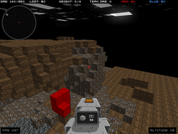
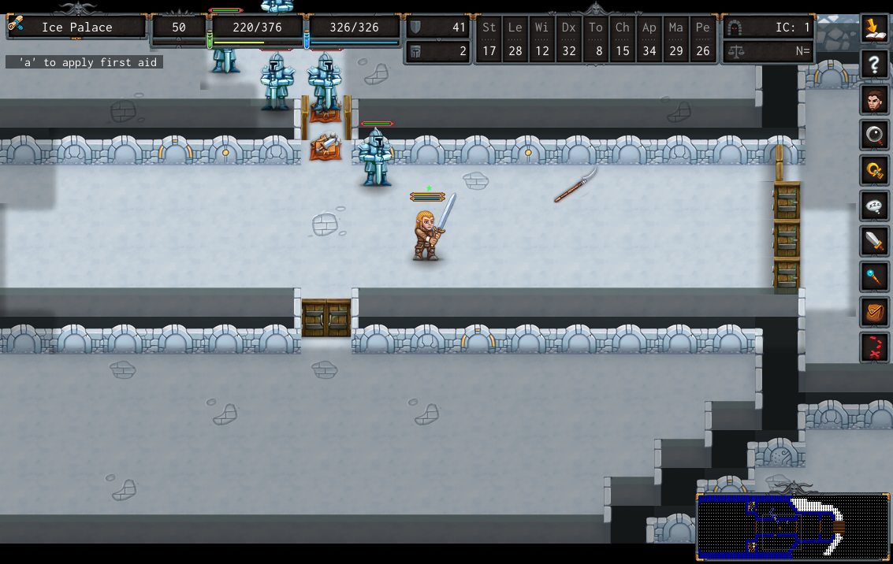
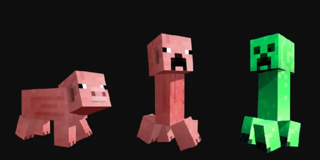
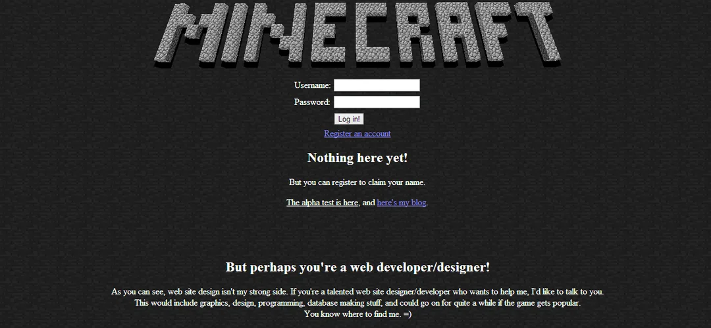
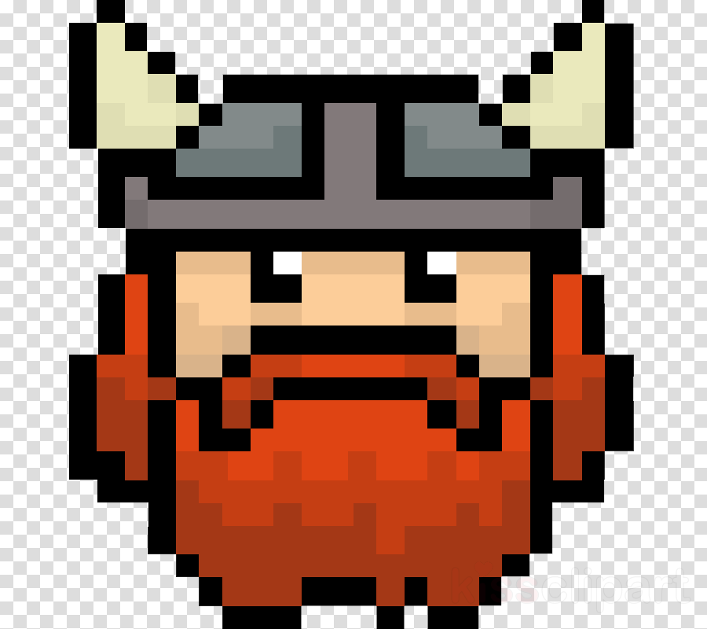

История создания Minecraft: От пещерного эксперимента до культурного феномена
История Minecraft — это классическая история успеха инди-разработки, история гения-одиночки, который смог построить империю на пикселях и кубиках. Путь от сырой идеи до продажи Microsoft за $2,5 миллиарда полон вдохновения, трудностей и невероятной удачи.
I. Предыстория: Гений по имени Нотч
1. Кто такой Маркус «Нотч» Перссон?
- Детство и увлечение: Маркус Перссон родился в Швеции в 1979 году. С детства он был увлечен компьютерами и играми. В 7 лет он уже начал программировать на Commodore 128, благодаря своему отцу, который принес домой этот компьютер. Его страстью были текстовые квесты и ранние RPG.
- Первые шаги в разработке: В подростковом возрасте он создавал свои первые простые игры и карты для Doom и Wolfenstein 3D. Позже он работал веб-разработчиком, но мечтал о создании собственных игр.
2. Истоки вдохновения: Три кита, на которых стоит Minecraft
Нотч черпал вдохновение из трех ключевых источников, смешав их в уникальный «рецепт»:
- Infiniminer (Главный визуальный и механический донор): Эта игра 2009 года была многопользовательской «песочницей» с видом от первого лица, где игроки добывали ресурсы (блоки!) в процедурно генерируемом мире. Именно от Infiniminer Нотч позаимствовал идею блочной структуры мира, текстур и добычи ресурсов. Когда исходный код Infiniminer утек в сеть и игра потеряла популярность, Нотч увидел в этом свой шанс.
- Dwarf Fortress (Главный источник глубины и «песочности»): Эта невероятно сложная и культовая игра-крепость с ASCII-графикой вдохновила Нотча на создание процедурной генерации мира, симуляции жизни существ и элементов геймплея, таких как добыча полезных ископаемых и строительство.
- Roguelike игры (Источник сложности и приключений): Элементы случайности, опасности, исследования подземелий и перманентной смерти (при потере всех вещей) пришли в Minecraft именно из этого жанра. Идея проснуться в случайно сгенерированном мире и выживать любой ценой — чистый рогалик.

Infiniminer Dwarf Fortress
Dwarf Fortress

RogueII. Рождение Легенды: Создание Minecraft
1. «Cave Game» — Первые шаги (Май 2009)
- Вдохновленный неудачей Infiniminer, Нотч начинает работу над прототипом. Он называет его «Cave Game» (Пещерная игра).
 Cave Game
Cave Game
- 10 мая 2009 года Нотч публикует на форуме TIGSource (форум независимых разработчиков) видео с геймплеем. В игре уже есть базовые блоки (земля, камень), которые можно ставить и ломать, а также платформерная физика прыжков.
- Игра сразу же привлекает внимание сообщества инди-разработчиков своей простой, но завораживающей концепцией бесконечных возможностей.
2. Переименование и первые наработки
- Нотч переименовывает игру в Minecraft: Order of the Stone (отсылка к комиксу The Order of the Stick), но позже сокращает название просто до Minecraft (Добыча + Ремесло).
- Он добавляет первые виды дерева и досок, создавая первую в истории игре систему крафта, которая до сих пор остается уникальной — без меню, игроки должны сами догадываться о рецептах, раскладывая предметы в сетке верстака.
- Создается первая угроза для игрока — крипер. По легенде, это была ошибка при моделировании свиньи: Нотч перепутал оси высоты и длины, в результате чего получилось длинное вертикальное существо. Оно ему понравилось, и он оставил его как враждебного моба.

Крипер3. Начало продаж и рост популярности

Старый сайт майнкрафта- 17 мая 2009 года — Официальный день рождения Minecraft. Нотч открывает возможность купить игру на своем сайте за символическую плату (около 10 евро) с обещанием, что все будущие обновления будут бесплатны, а цена будет расти по мере добавления контента.
- Продажи растут медленно, но верно. К концу июня продано около 1400 копий — этого хватает, чтобы Нотч мог уволиться с основной работы и сосредоточиться на игре.
- Главным двигателем прогресса становится YouTube. Видеоблогеры, такие как Йогскаст, начинают выкладывать летсплеи, показывая зрителям, как можно строить невероятные сооружения и выживать. Это вызывает взрывной рост популярности.

YogscastIII. Эра Mojang: От одного разработчика к компании
1. Основание Mojang AB (2010)
- Успех игры требует создания юридического лица. Нотч вместе со своим другом Якобом Порсером (известным как «Якоб из Valve», хотя он там не работал) и Карлом Маннехом регистрируют компанию Mojang AB («Mojang» в переводе со шведского означает «гаджет» или «безделушка»).
- Нотч понимает, что не справляется с разработкой в одиночку. Он нанимает Йенса Бергенстена, известного под ником Jeb, который становится ведущим дизайнером и правой рукой Нотча.
 Нотч и Джеб
Нотч и Джеб
2. Ключевые вехи разработки (2010-2011)
- Альфа-версия: Добавлены механизмы (редстоун), новые биомы, первый «Ад» (Нижний мир).
- Бета-версия: Добавлены рывок (бег), опыт, зачарование, поршни, еда и голод.
- Именно в этот период Minecraft становится феноменом. Продажи исчисляются миллионами. Форумы переполнены скриншотами грандиозных построек, а фанаты создают моды, карты и руководства.
IV. Полноценный релиз и сделка с Microsoft
1. Официальный релиз (18 ноября 2011)
- После двух лет разработки, наконец, выходит официальная версия игры Minecraft 1.0.
- Дата выбрана не случайно — в эти дни в Лас-Вегасе проходит фестиваль MineCon 2011.
- На MineCon'e происходит кульминация: Нотч объявляет о добавлении в игру Края (The End) и финального босса — Эндер-дракона. Победа над драконом символизировала завершение «основного сюжета» игры, хотя творческие возможности оставались безграничными.
- После победы над драконом появляются титры с трогательным посланием сообществу: «Ты свободен. Игра окончена. Спасибо за игру». Это был пик славы Нотча.
2. Усталость Нотча и передача полномочий
- Стремительный успех и постоянное внимание прессы тяжело сказываются на Нотче. Он устает от роли «иконы» и от конфликтов в сообществе по поводу каждого нововведения.
- В декабре 2011 года он передает пост ведущего разработчика своему другу Йенсу «Jeb» Бергенстену, заявляя, что хочет вернуться к маленьким экспериментальным проектам и наслаждаться жизнью, которую ему подарила игра.
3. Продажа Microsoft (2014)
- 15 сентября 2014 года происходит событие, которое потрясло игровой мир: Microsoft объявляет о покупке Mojang AB и интеллектуальной собственности Minecraft за $2,5 миллиарда долларов.
- Почему Нотч согласился? Главная причина — давление. Нотч неоднократно получал угрозы от фанатов, которые были недовольны изменениями в игре (например, новыми условиями лицензирования или спорными обновлениями). Он также устал от менеджмента и хотел выйти из игры, получив финансовую независимость. В своем блоге он написал: «Я пытался максимально долго сопротивляться, но я понял, что не хочу нести ответственность за такую огромную игру. Я хочу заниматься маленькими проектами и снова чувствовать себя свободным».
- Сделка сделала Нотча миллиардером. Он купил особняк за $70 млн в Беверли-Хиллз, но, по его собственным словам, богатство сделало его одиноким. Позже он критиковал Microsoft за политику в отношении игры, но факт остается фактом: он продал свое детище.
 Беверли хиллз
Беверли хиллз
V. Наследие и влияние
Сегодня Minecraft продолжает развиваться под крылом Microsoft и студии Mojang Studios.
- Это самая продаваемая игра в истории (более 300 миллионов копий). История ее создания — это магическая история о том, как одна простая идея, подкрепленная страстью к программированию и любовью к играм, смогла изменить всю индустрию и стать домом для миллионов игроков по всему миру.